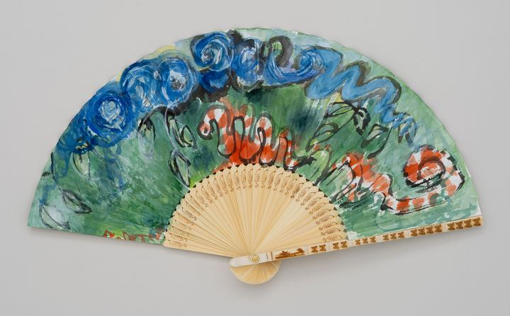

The Hidden World: Clouds and Python은닉된 세계: 구름과 비단뱀

In a forest of deep green, a red snake winds its body this way and that. Banded in red and white, it slides through the undergrowth and coils round on the right. Above it, heavy blue clouds swirl along the edge of the fan, and leaves drawn in ink wrap around the snake. Laying ink and colors in thick, rough strokes, I let the red within the green show itself, as if hidden. Since childhood I have been afraid of snakes, so much that even a photograph could make me scream. Yet as I kept meeting them in my paintings, the snake slowly showed me another face: simply a member of the forest's family, with brilliant colors and supple curves. An old saying tells us that people are troubled not by things themselves, but by their opinions of things. This snake had been quietly in the forest all along. Perhaps what was hidden was not the snake, but my own eyes, unable to see its beauty.
온통 짙푸른 숲속에 붉은 뱀 한 마리가 몸을 구불구불 틀고 있다. 붉은색과 흰색이 번갈아 감긴 몸은 풀숲 사이를 지나 오른쪽에서 둥글게 똬리를 튼다. 그 위로는 짙푸른 구름이 무겁게 소용돌이치며 부채의 가장자리를 따라 흐르고, 먹으로 그은 잎사귀들이 뱀 둘레를 감싼다. 먹과 채색을 굵고 거친 붓질로 올려, 초록 속의 붉음이 숨은 듯 드러나게 했다. 어린 시절부터 나는 뱀이 무서웠다. 사진만 보아도 비명을 지를 만큼. 그런데 그림으로 자꾸 마주하다 보니 뱀은 조금씩 다른 얼굴을 보여 주었다. 화려한 빛깔과 유연한 곡선을 지닌, 그저 숲의 한 식구. 사람을 괴롭히는 것은 사물이 아니라 사물에 대한 생각이라는 옛말이 있다. 이 뱀은 처음부터 숲속에 조용히 있었다. 숨어 있던 것은 뱀이 아니라, 그 아름다움을 보지 못하던 내 눈이었는지도 모른다.